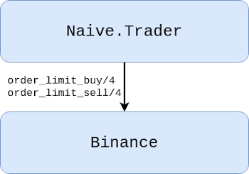
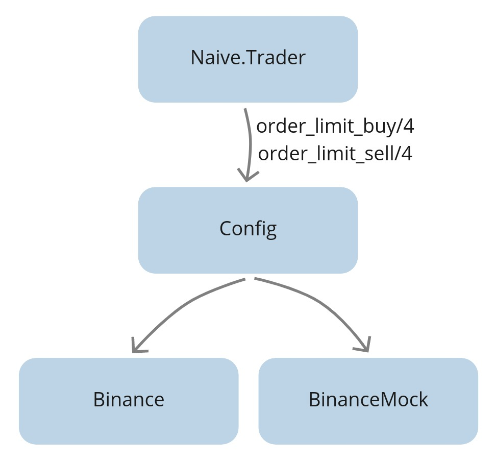
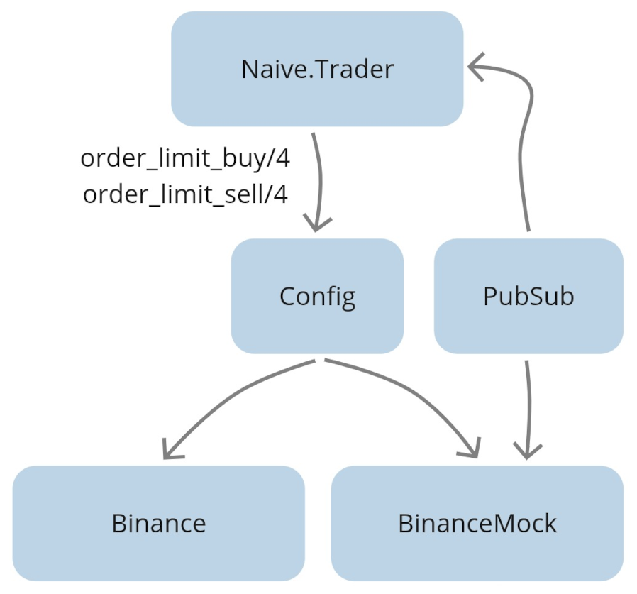
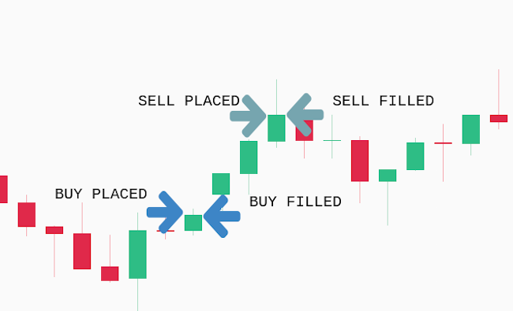

Chapter 4 Mock the Binance API
So far, our Trader has been talking directly to the real Binance exchange.
If you ran the example from the previous chapter, you may have noticed the tension:
every test run uses real API calls, burns through rate limits, and - if you’re not careful - real money.
Developing against a live API can feel a bit like walking a tightrope without a safety net.
In this chapter, we’ll overcome these hurdles by creating a new BinanceMock module that will act
as a drop-in replacement for the real Binance module. This mock, built as a GenServer,
will maintain an in-memory order book and leverage our existing PubSub system to simulate order updates.
This approach will allow us to develop and test our trading logic safely and efficiently.
Let’s dive in!
4.1 Objectives
- Design the
BinanceMockapplication - Create a new app
- Implement getting exchange info
- Implement placing buy and sell orders
- Implement callback for incoming trade events
- Update the Trader and Configuration
- Test the implementation
4.2 Design
Let’s start by reviewing the current state of our application:

Currently, our Trader uses the Binance module to place buy/sell
orders and get exchange info.
Since Binance.get_exchange_info/0 retrieves public data and doesn’t require authentication,
our mock can simply pass this request through to the real Binance library.
Other functions, such as placing buy and sell orders, require a funded Binance account. To avoid this dependency during development, we’ll create a mock that simulates these functions.
We will update the Trader to fetch the module’s name from the configuration:

By fetching the module name from our configuration, we give our Trader ‘pluggable’ behavior.
This means we can swap the real Binance client for our mock one with a single line of config -
all without touching a single line of our core trading logic. It’s a clean, powerful way to keep our system flexible.
The BinanceMock module itself will implement the same contract
(or public API) as the real Binance module.
It will need to store buy and sell orders and provide a way to retrieve them, covering the functionality of the REST API endpoints we use.
However, the real Binance API also tracks when orders are filled. In the real world, Binance tells us when an order is filled. In our mock world, we are the exchange - and that’s a fundamental shift in perspective. We’re no longer just a client waiting for notifications; we’re the system that must watch the incoming price stream and decide: ‘Has the price hit our target? If so, let’s fill that order!’ This is where our mock really comes to life.
To mimic this, BinanceMock will subscribe to the "TRADE_EVENTS:#{symbol}"
PubSub topic. These trade events will provide the data needed to
update the statuses of our fake orders.

So, how will our mock know when to fill an order?
The BinanceMock process will subscribe to the trade events stream and
mark an order as filled once a market trade occurs at a price that would execute it.

As the diagram shows, our naive strategy places an order at the current market price.
In this scenario, the market price briefly rises after our order is placed.
The BinanceMock will then wait for a trade event from PubSub where the
trade price is at or below our buy order’s price.
When this condition is met, BinanceMock marks our buy order as "FILLED".
Upon detecting the filled order, the Trader will proceed to place a sell order.
Similar to the buy order, BinanceMock will wait for a trade event from PubSub
where the trade price is at or above the sell order’s price.
When this condition is met, BinanceMock marks our sell order as "FILLED".
Enough theory for now, let’s get our hands dirty with some coding.
4.3 Create “BinanceMock” app
Let’s start by creating a new supervised app called BinanceMock:
Next, we’ll set up the BinanceMock module itself.
We’ll make it a GenServer to manage its state, which will include the
in-memory order books.
We’ll use the Decimal module for accurate price comparisons and the
Logger module for logging.
The GenServer will manage its state using an internal %State{} struct, which contains:
- an
order_booksmap, which will store the order book for each tradingsymbol. - a list of
subscriptionsto track the PubSub topics the mock is listening to. - the
next_order_id, ensuring we can create unique and predictable IDs for our fake orders.
The order_books map will hold an %OrderBook{} struct for each trading symbol.
Each %OrderBook{} will, in turn, contain three lists:
buy_side, sell_side, and historical.
# /apps/binance_mock/lib/binance_mock.ex
defmodule BinanceMock do
use GenServer
alias Decimal, as: D
alias Streamer.Binance.TradeEvent
require Logger
defmodule State do
defstruct order_books: %{}, subscriptions: [], next_order_id: 1
end
defmodule OrderBook do
defstruct buy_side: [], sell_side: [], historical: []
end
def start_link(_args) do
GenServer.start_link(__MODULE__, nil, name: __MODULE__)
end
def init(_args) do
{:ok, %State{}}
end
end4.4 Implement getting exchange info
As mentioned, we can retrieve the exchange info by calling the Binance module’s
function directly, since it provides public data:
4.5 Implement placing buy and sell orders
Since the logic for placing buy and sell limit orders is nearly identical,
we’ll create a private helper function, order_limit/4, to handle both.
# /apps/binance_mock/lib/binance_mock.ex
def order_limit_buy(symbol, quantity, price, "GTC") do
order_limit(symbol, quantity, price, "BUY")
end
def order_limit_sell(symbol, quantity, price, "GTC") do
order_limit(symbol, quantity, price, "SELL")
endIn the order_limit/4 helper function, we will:
- Generate a fake order based on the provided
symbol,quantity,price, andside. - Send a
castmessage to theBinanceMockGenServerto add the fake order to the order book. - Return an
{:ok, %OrderResponse{}}tuple to maintain API compatibility with the realBinancemodule.
# /apps/binance_mock/lib/binance_mock.ex
defp order_limit(symbol, quantity, price, side) do
%Binance.Order{} =
fake_order =
generate_fake_order(
symbol,
quantity,
price,
side
)
GenServer.cast(
__MODULE__,
{:add_order, fake_order}
)
{:ok, convert_order_to_order_response(fake_order)}
endNext, let’s implement the handle_cast/2 callback for the :add_order message.
This function will first subscribe to the appropriate TRADE_EVENTS:#{symbol} topic
(if it hasn’t already) and then add the incoming order to the correct order book
for its symbol:
# /apps/binance_mock/lib/binance_mock.ex
def handle_cast(
{:add_order, %Binance.Order{symbol: symbol} = order},
%State{
order_books: order_books,
subscriptions: subscriptions
} = state
) do
new_subscriptions = subscribe_to_topic(symbol, subscriptions)
updated_order_books = add_order(order, order_books)
{
:noreply,
%{
state
| order_books: updated_order_books,
subscriptions: new_subscriptions
}
}
endLet’s start by implementing subscribe_to_topic/2.
This function ensures the symbol is uppercased and checks
if we’ve already subscribed to that symbol’s topic.
If not, it subscribes the process to the TRADE_EVENTS:#{symbol} topic
using the Phoenix.PubSub module.
Finally, we’ll prepend the symbol to our list of subscriptions and return the updated list:
# /apps/binance_mock/lib/binance_mock.ex
defp subscribe_to_topic(symbol, subscriptions) do
symbol = String.upcase(symbol)
stream_name = "TRADE_EVENTS:#{symbol}"
case Enum.member?(subscriptions, symbol) do
false ->
Logger.debug("BinanceMock subscribing to #{stream_name}")
Phoenix.PubSub.subscribe(
Streamer.PubSub,
stream_name
)
[symbol | subscriptions]
_ ->
subscriptions
end
endNext, let’s implement the add_order/2 function. First, we need to get the order book
for the order’s symbol.
Depending on the order’s side, we will update either the buy_side or sell_side list.
A Note on Performance: Going the Extra Mile
Before we dive into the code for adding orders,
let’s talk about performance. When adding a new order to our buy_side or sell_side lists,
we have a crucial requirement: the list must remain sorted by price.
A simple approach would be to add the new order and then re-sort the
entire list with Enum.sort/1. While this works, it introduces a hidden performance
bottleneck.
Sorting the entire list on every insertion is an expensive operation with a time complexity of \(O(n \log n)\). As the number of open orders grows, this seemingly innocent function could slow down our entire mock server.
This is where we can go the extra mile. Instead of the easy add-then-sort method,
we will write a custom insert_sorted/3 helper. This function will find the correct
position for the new order in the already-sorted list and insert it there directly.
This approach is far more efficient (\(O(n)\)) and ensures our mock remains fast
and responsive, no matter how many orders we’re handling.
While it might seem like over-engineering for a mock server, this is a perfect exercise in writing professional, scalable code. A word of caution, though: in real-world projects, you should measure before you optimize. Here, the exercise is valuable because (a) the fix is simple, and (b) it teaches a pattern you’ll use elsewhere. Learning to identify when a potential bottleneck is worth addressing - and when it isn’t - is just as important as knowing how to fix it.
# /apps/binance_mock/lib/binance_mock.ex
defp add_order(
%Binance.Order{symbol: symbol} = order,
order_books
) do
order_book = Map.get(order_books, symbol, %OrderBook{})
order_book =
if order.side == "SELL" do
# Sell orders are sorted ascending (lowest price first)
updated_sell_side = insert_sorted(order, order_book.sell_side, &D.lt?/2)
%{order_book | sell_side: updated_sell_side}
else
# Buy orders are sorted descending (highest price first)
updated_buy_side = insert_sorted(order, order_book.buy_side, &D.gt?/2)
%{order_book | buy_side: updated_buy_side}
end
Map.put(order_books, symbol, order_book)
end
defp insert_sorted(order, orders, sorter) do
{left, right} =
Enum.split_while(
orders,
&sorter.(
D.from_float(&1.price),
D.from_float(order.price)
)
)
left ++ [order | right]
endThe magic of our new approach lies in the insert_sorted/3 helper function.
Instead of appending an order and then re-sorting the entire list,
this function finds the correct position and reconstructs the list in a single,
efficient pass. Let’s break down how it works.
The function uses Enum.split_while/2 to divide the existing list into two parts:
a left list containing all orders that should come before our new one,
and a right list with everything that should come after.
Once the split point is found, the expression left ++ [order | right] efficiently
reconstructs the list. The [order | right] part prepends the new order to the
right list (a very fast operation in Elixir), and then the ++ operator concatenates
the left list with that result. This builds a new, sorted list in a single pass
without a costly re-sort.
Notice how we pass a sorter function (&D.lt?/2 or &D.gt?/2) as the third argument.
This makes our helper flexible, allowing us to sort in either ascending or descending order.
Now, let’s implement the helper functions we referred to previously:
generate_fake_order/4 and convert_order_to_order_response/1.
Starting with generate_fake_order/4, this function takes a symbol, quantity, price,
and side and returns a %Binance.Order{} struct populated with fake data.
To ensure our tests are predictable, we need a way to generate unique
and consistent IDs for these fake orders. We’ll achieve this by using
the next_order_id from our GenServer’s state, which guarantees that
tests produce the same order IDs every time they run.
# /apps/binance_mock/lib/binance_mock.ex
defp generate_fake_order(symbol, quantity, price, side)
when is_binary(symbol) and
is_binary(quantity) and
is_number(price) and
(side == "BUY" or side == "SELL") do
current_timestamp = :os.system_time(:millisecond)
order_id = GenServer.call(__MODULE__, :generate_id)
client_order_id = :crypto.hash(:md5, "#{order_id}") |> Base.encode16()
Binance.Order.new(%{
symbol: symbol,
order_id: order_id,
client_order_id: client_order_id,
price: price,
orig_qty: quantity,
executed_qty: "0.00000000",
cummulative_quote_qty: "0.00000000",
status: "NEW",
time_in_force: "GTC",
type: "LIMIT",
side: side,
stop_price: "0.00000000",
iceberg_qty: "0.00000000",
time: current_timestamp,
update_time: current_timestamp,
is_working: true
})
endTo convert a %Binance.Order{} into a %Binance.OrderResponse{},
we can reuse the same logic we implemented in the Naive.Trader module.
Since this conversion logic is needed in both our Trader and BinanceMock,
the best practice would be to move this function into a shared application
within our umbrella project.
For now, however, we’ll simply copy the implementation to avoid refactoring too early.
# /apps/binance_mock/lib/binance_mock.ex
defp convert_order_to_order_response(%Binance.Order{} = order) do
response = struct(Binance.OrderResponse, Map.from_struct(order))
%{response | transact_time: order.time}
endNote: You might be tempted to stop everything and build a shared Core application right now - after all, this duplication violates the DRY (Don’t Repeat Yourself) principle. In real-world projects, we often accept a little ‘technical debt’ like this to keep momentum. The key is to acknowledge it and plan to address it. Don’t worry - we’ll pay this debt back in Chapter 15 when we extract shared utilities into a proper Core application!
To complete the order placement logic, we need the handle_call/3 callback
for :generate_id. This function replies to the caller with the current next_order_id
and updates the state by incrementing the ID for the next request.
4.6 Implement Order Retrieval
We can now move on to retrieving the orders.
First, we need to add an interface function that will call our BinanceMock GenServer:
# /apps/binance_mock/lib/binance_mock.ex
def get_order(symbol, time, order_id) do
GenServer.call(
__MODULE__,
{:get_order, symbol, time, order_id}
)
endThe handle_call/3 callback is straightforward.
First, it retrieves the order book for the given symbol.
A retrieval request doesn’t specify whether the order is a buy or a sell, or if it’s open or filled.
Therefore, we must search all three lists - buy_side, sell_side,
and historical - to find the matching order.
# /apps/binance_mock/lib/binance_mock.ex
def handle_call(
{:get_order, symbol, time, order_id},
_from,
%State{order_books: order_books} = state
) do
order_book =
Map.get(
order_books,
symbol,
%OrderBook{}
)
(order_book.buy_side ++
order_book.sell_side ++
order_book.historical)
|> Enum.find(
&(&1.symbol == symbol and
&1.time == time and
&1.order_id == order_id)
)
|> case do
%Binance.Order{} = order -> {:reply, {:ok, order}, state}
_ -> {:reply, {:error, :not_found}, state}
end
end4.7 Implement callback for incoming trade events
Finally, we need to handle incoming trade events received from the PubSub topic.
We’ll implement a handle_info/2 callback that performs the following steps:
- Gets the order book for the
symbolfrom the trade event. - Finds all
buy_sideorders that can be filled. A buy order is considered filled if its price is greater than or equal to the trade’s price. For example, a buy order at $50.00 will be filled by a trade at $50.00 or below. - Finds all
sell_sideorders that can be filled. A sell order is considered filled if its price is less than or equal to the trade’s price. For example, a sell order at $50.00 will be filled by a trade at $50.00 or above. - Moves the filled orders from the active
buy_sideandsell_sidelists into ahistoricallist for future lookups.
Here we see the payoff from our earlier decision to keep the order lists sorted.
We can efficiently filter out filled orders using Enum.split_while/2:
# /apps/binance_mock/lib/binance_mock.ex
def handle_info(
%TradeEvent{} = trade_event,
%{order_books: order_books} = state
) do
order_book =
Map.get(
order_books,
trade_event.symbol,
%OrderBook{}
)
trade_price = D.from_float(trade_event.price)
{to_fill_buy_orders, remaining_buy_orders} =
order_book.buy_side
|> Enum.split_while(&D.lte?(trade_price, D.from_float(&1.price)))
{to_fill_sell_orders, remaining_sell_orders} =
order_book.sell_side
|> Enum.split_while(&D.gte?(trade_price, D.from_float(&1.price)))
filled_orders =
(to_fill_buy_orders ++ to_fill_sell_orders)
|> Enum.map(&Map.replace!(&1, :status, "FILLED"))
order_books =
Map.put(
order_books,
trade_event.symbol,
%{
buy_side: remaining_buy_orders,
sell_side: remaining_sell_orders,
historical: filled_orders ++ order_book.historical
}
)
{:noreply, %{state | order_books: order_books}}
endNote: We’re letting that historical list grow forever. In a high-frequency environment,
this is a silent “time bomb” that will eventually exhaust your RAM and crash the node -
potentially hours or days after deployment, making it notoriously hard to debug.
We’ll leave it as-is since it’s just a mock, but to make this production-grade,
you’d want to either truncate the list (e.g., keep only the last 1,000 orders) or offload the data to persistent storage.
And that’s it for the BinanceMock implementation. Now, we need to add it to
the application’s supervision tree so it starts automatically:
4.8 Update the Trader and Configuration
Next, let’s update the Naive.Trader module.
We’ll use a module attribute to read the Binance client from
the application’s configuration:
Inside the Naive.Trader module, we’ll replace all direct calls to Binance with
our new @binance_client module attribute:
# /apps/naive/lib/naive/trader.ex
...
@binance_client.order_limit_buy(
...
@binance_client.get_order(
...
@binance_client.order_limit_sell(
...
@binance_client.get_order(
...
@binance_client.get_exchange_info()
...Since Naive.Trader now relies on the application configuration to determine
which client to use, we need to add this setting to our /config/config.exs file:
The final step is to configure our dependencies.
We’ll start by modifying the mix.exs of the binance_mock app to list the
packages it requires:
# /apps/binance_mock/mix.exs
...
defp deps do
[
{:binance, "~> 1.0"},
{:decimal, "~> 2.0"},
{:phoenix_pubsub, "~> 2.0"},
{:streamer, in_umbrella: true}
]
end
...We’ll also add :binance_mock to the dependency list for the naive app,
since it will use either Binance or BinanceMock to trade:
4.9 Test the implementation
We can now see the BinanceMock in action.
First, let’s start an iex session and verify that the BinanceMock process is running.
Since our configuration already points to BinanceMock, we can start streaming and
trading on a symbol just as we did in the previous chapter:
$ iex -S mix
...
iex(1)> Process.whereis(BinanceMock)
#PID<0.320.0> # <- confirms that BinanceMock process is alive
iex(2)> Streamer.start_streaming("xrpusdt")
{:ok, #PID<0.332.0>}
iex(3)> Naive.Trader.start_link(%{symbol: "xrpusdt", profit_target: "-0.001"})
00:19:39.232 [info] Initializing new trader for XRPUSDT
{:ok, #PID<0.318.0>}
00:19:40.826 [info] Placing BUY order for XRPUSDT @ 0.29520000, quantity: 100
00:19:44.569 [info] Buy order filled, placing SELL order for XRPUSDT @ 0.29549,
quantity: 100.0
00:20:09.391 [info] Trade finished, trader will now exitWell done! You’ve just built one of the most critical components for any serious application:
a mock for an external service. By creating BinanceMock, you’ve successfully decoupled your trading logic from the live Binance exchange -
and decoupling is the secret weapon of maintainable software.
This is a massive milestone. It means you can now test your trading strategies safely without risking real money, develop new features without needing an active internet connection, and run automated tests reliably without worrying about network latency or API rate limits.
More importantly, you’ve learned a pattern that applies far beyond this project: whenever you depend on an external system, consider how you’d swap it out. That mindset will serve you well.
So, What’s Next?
Now that we have a safe and reliable testing environment, we can confidently tackle a much bigger challenge. Our current trader can only handle one symbol at a time. To build a truly effective bot, we need it to trade on many different symbols in parallel.
In the next chapter, we’ll dive deep into the heart of OTP by building a
supervision tree. This will allow us to dynamically launch, monitor, and even
automatically restart traders for multiple symbols, creating a truly fault-tolerant
and concurrent trading system. The BinanceMock we’ve just built will be an essential
safety net, allowing us to engineer this complex architecture with confidence.
Let’s get started!
[Note] Please remember to run mix format to keep things nice and tidy.
The source code for this chapter can be found in the book’s source code repository (branch: chapter_04).